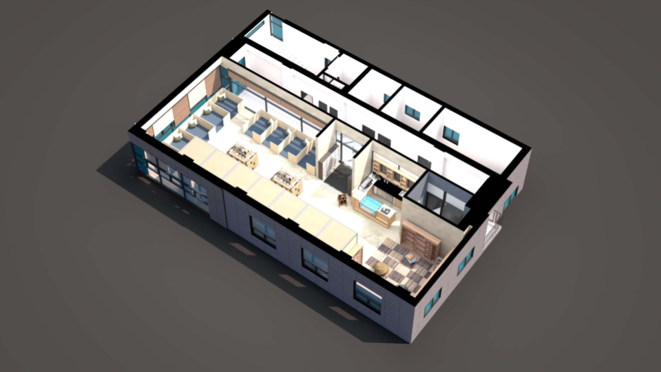

관심 업무
PC·소프트웨어 관리
사용자 지원
반복 업무 자동화
SELECTED PROJECTS
업무를 이해하고, 도구로 연결합니다.
반복 작업을 줄이는 도구부터
전산 관리와 사용자 지원까지.

함께 해온 작업
도면·3D 시각화
AutoCAD · SketchUp
건축 포트폴리오 보기 ↗BACKGROUND & APPROACH
배운 것을 실제 문제에 연결합니다.
이렇게 일하고 싶습니다
- 01
먼저, 문제를 확인합니다.
증상과 설정을 하나씩 살펴보고, 원인을 좁혀 해결 방법을 찾습니다.
- 02
직접 적용하고 확인합니다.
프로그램을 만들고 수정하며 실제 사용 결과를 확인하는 방식으로 배웁니다.
- 03
더 편리한 방법을 고민합니다.
자주 쓰는 기능을 모은 CAD 도구처럼 반복 작업을 줄일 방법을 찾습니다.
학력 · 경험 · 자격
- 2016.03 — 2022.08
- 충북대학교 소프트웨어학과4년제 학사 졸업
- 2020.08 — 2020.09
- 플러그미디어웍스어플리케이션 개발 관련 학생 인턴
- 국가기술자격
- 정보처리기사운영체제·데이터베이스·네트워크 기초 학습
기술과 학습 범위
직접 개발에 활용
C# · WPF · AutoCAD .NET API
CAD 작업 보조 도구 제작전공·개인 학습
Spring Boot · C++ · Python
소프트웨어 개발과 문제 해결 기초관심을 갖고 익히는 분야
PC 하드웨어 · 운영체제 · 소프트웨어 설정
사내 전산 환경과 사용자 지원으로 확장CONTACT
작은 불편함도 살피는
동료가 되겠습니다.
전산·OA·IT 사용자 지원 직무를 준비하고 있습니다.